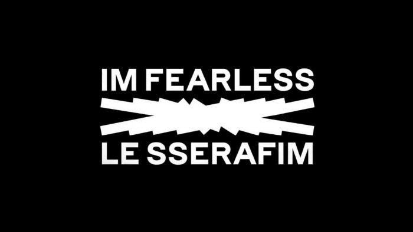

2021년 4월 29일자로 공식 활동이 종료된 아이즈원을 뒤로하고, 아이즈원의 12명의 멤버들은 현재 각기 다른 길을 걷고 있다. 김채원, 미야와키사쿠라는 2022년 5월 하이브 산하 쏘스뮤직 엔터테인먼트의 신인 걸그룹 "LESSERAFIM"으로 다시 데뷔하였고,
장원영과 안유진은 기존의 소속사 스타쉽 엔터테인먼트에서 신인 걸그룹 "IVE"로 2021년 12월에 데뷔하였다. 이외에도 권은비, 조유리, 최예나, 이채연은 각각 솔로 아티스트로, 김민주, 강혜원은 배우로, 야부키나코와 혼다히토미는 일본 활동으로 성공적인 새출발을 하였고 현재도 왕성하게 활동 중이다.
